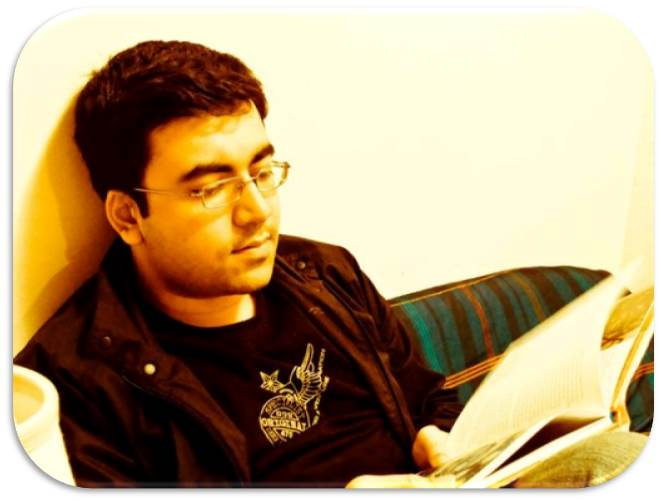
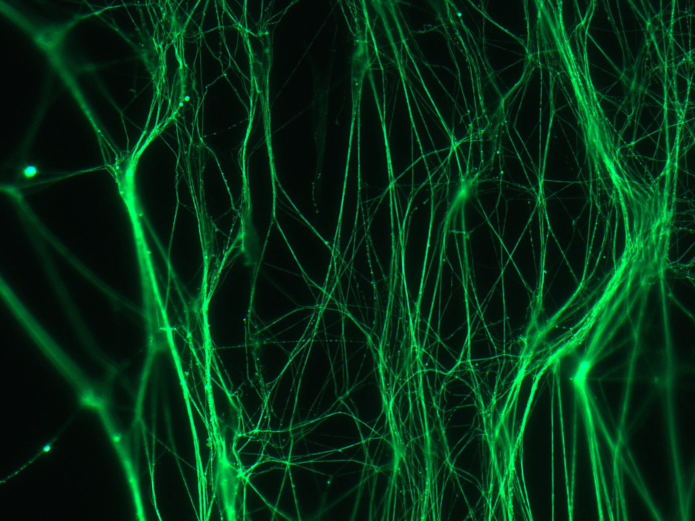
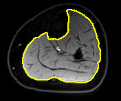
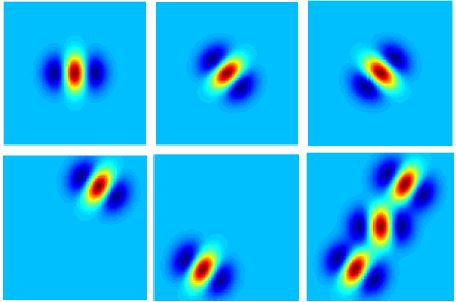
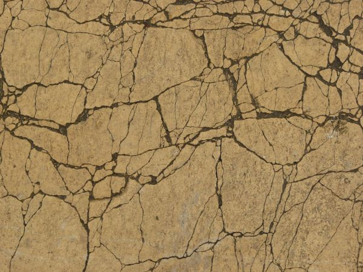
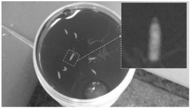
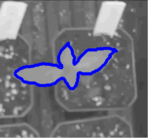

|  |
Suvadip Mukherjee
PhD Candidate
|
About | Research Interests | Projects | Publications | Awards | CV | Misc.
About Me
Welcome to my website. I am Suvadip, a graduate student working with Dr. Scott T. Acton's research group, VIVA at the University of Virginia, Charlottesville in USA. I completed my bachelor's degree in Electrical Engineering from Jadavpur University, India and master's in Computer Science from Indian Statistical Institute, Kolkata in 2008 and 2011 respectively. In the Fall of 2011, I joined UVa as a research scholar where I work on image and signal processing applications.Research Interests
I am interested in problems related to image analysis and computer vision. Broadly, my research interests include the following:Image Analysis: Active contours, level sets, segmentation of vascular structures, graph based segmentation.
Video Analysis: Object detection and tracking in videos; use of active contours for tracking, kalman filter, particle filter.
Biological/biomedical Image Analysis: enhancement, segmentation and structure quantification from biological and biomedical images including confocal microscopy, ultrasound, etc. 3D segmentation and enhancement of neuron images.
Image Retrieval: content based image search, sparsity based methods for comparison and classification of images, retrieval based on salient objects.
Research Projects [Top]
A major focus of my PhD dissertation is on biological image analysis problems. During my tenure as a graduate student, I have been associated with a few extremely interesting and challenging image analysis problems in the relatively new field of bioimage informatics. A list of such projects, with a fairly elaborate discussion is provided below. [Top]|  | Automated segmentation of neurons
3D confocal microscopy images of the Drosophila neurons are analyzed for brain functional analysis. An adult Drosophila larva has around 20,000 neurons in its nervous system, and this animal has been considered in the biology community as a prototype species for modeling the brain of more sophisticated animals, such as rats or humans. Our research in this field focuses on segmenting the neurons of the fruit fly from a 3-D confocal microscopy image. Over the last few years, we have developed three novel neuron tracers-- Tree2Tree [2], Tree2Tree-2[6] and Tubularity Flow Field (TuFF)[1] |
|  | Region based segmentation in presence of intensity inhomogeneity
We propose a novel region based segmentation method capable of segmenting objects in presence of significant intensity variation. Current solutions use some form of local processing to tackle intra-region inhomogeneity, which makes such methods susceptible to local minima. In this letter, we present a framework which generalizes the traditional Chan-Vese algorithm. In contrast to existing local techniques, we represent the illumination of the regions of interest in a lower dimensional subspace using a set of pre-specified basis functions. This representation enables us to accommodate heterogeneous objects, even in presence of noise. |
|  | Enhancement of filamentous structures using local directional evidence
Vascular structures are predominant in biomedical and biological image processing. Robust segmentation of such structures demands a preprocessing stage involving enhancement of the tubular objects. We propose a novel method to enhance vascular structures from low contrast images by incorporating evidence of neighboring tubular structures in addition to the local vessel detection. The proposed solution is capable of handling bifurcations, intensity inhomogeneity and complex geometry of the vessels, thus providing a robust preprocessing for segmentation. |
|  | Evaluation of concrete cracks using image analysis
Concrete bridge decks are a critical structural component in bridges and the characterization of their deteriorating condition remains an ongoing challenge for the Department of Transportation. Inspectors must identify and quantify deficiencies such as cracks, delaminations, and spalls. In this ongoing collaborative work with the dept. of Civil Engineering, we are developing novel image processing tools to detect and snalyze the morphology of cracks on concrete structures. |
|  | Drosophila larva motion tracking
We aim to analyze the social behavior of Drosophila larvae through automated identification of their motion activity pattern. Social activity recognition is an essential step in identifying the correlation between specific neuronal structures in their brain to the social behavior of the species. Essentially, this problem involves two major components - tracking the moving insect followed by quantification and identification of specific motion activity that the animal performs. |
|  | Tracking sunflower heleotropic motion using affine snakes
Study of the sunflower movement may reveal clues regarding unknown mechanisms that regulate periodicity and spatial complexity in plant growth and development. In this work we introduce an automated process to track circumnutation of sunflower seedlings. The objective is to track the leaves of the sunflower plant in a video captured by an overhead camera. A salient feature of our solution is a constraint on affine transformation between updates. The constrained affine active contours used in this work exhibit improvement over other traditional approaches, with the new method yielding error less than one percent in the tracked sunflower centroid position. |
Publications [Top]
Journal publications
- S. Mukherjee, B. Condron and S.T. Acton, "Tubularity Flow Field – A Technique For Automatic Neuron Segmentation," IEEE Transactions on Image Processing, vol.24, no.1, pp.374,389, Jan. 2015. [paper]
- S. Mukherjee and S.T. Acton, "Region Based Segmentation in Presence of Intensity Inhomogeneity Using Legendre Polynomials," IEEE Signal Processing Letters, vol.22, no.3, pp.298,302, March 2015. [paper][code]
Conference publications (peer-reviewed)
- S. Mukherjee and S.T. Acton, ”Oriented Filters for Vessel Contrast Enhancement With Local Directional Evidence”, IEEE ISBI 2015 (accepted) [paper].
- S. Mukherjee et al. "Tracking sunflower circumnutation using affine parametric active contours." IEEE SSIAI 2014. [paper]
- M. Consylman, S. Mukherjee, D.P. Mukherjee, B. Condron and Scott T. Acton, "Social behavior analysis of Drosophila larvae via motion activity recognition", IEEE SSIAI 2014. [paper]
- S. Mukherjee et al. "Neuron segmentation with level sets", ACSSC 2013:1078-1082.[paper]
- R. Sarkar, S. Mukherjee and S. T. Acton, "Shape descriptors based on compressed sensing with application to neuron matching", ACSSC 2013: 970-974
- S. Mukherjee, B. Condron and S. T. Acton, "Chasing the neurome: Segmentation and comparison of neurons," EUSIPCO 2013: 1-4 [paper]
- S. Mukherjee and S. T. Acton, "Vector field convolution medialness applied to neuron tracing," ICIP 2013: 665-669 [paper]
- S. Mukherjee et al., "Tree2Tree2: Neuron tracing in 3D," ISBI 2013: 448-451. [paper]
- S. Mukherjee et al. "A geometric-statistical approach toward neuron matching", ISBI 2012: 772-775. [paper]
Awards and Recognition [Top]
- [2012] Charles L. Brown Graduate scholarship for academic excellence, University of Virginia
- [2011] TCS innovation award for best M.Tech dissertation, Indian Statistical Institute, Kolkata
- [2011] Gold medal for securing highest marks in the M.Tech program, Indian Statistical Institute, Kolkata
Misc. [Top]
- Numerical Tours, Level sets in Matlab, Online resource for Image Processing.
- Computer Vision homepage, Matlab codes by Peter Kovesi
- Sparse Coding @ UIUC , Compressive sensing @ Rice University
- Math Lectures: Calc. of Variations
- Machine Learning: Hastie et al. lectures